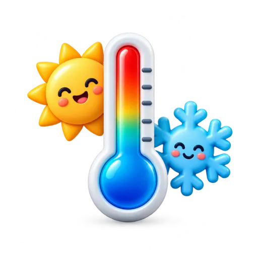

FERRAMENTA GRATUITA
Conversor de temperatura
Converta Celsius, Fahrenheit e Kelvin em poucos segundos.

Resultado
Informe um valor e clique em converter.
Como converter Celsius, Fahrenheit e Kelvin
Use esta ferramenta para transformar temperaturas entre as três escalas mais conhecidas. Celsius é comum no Brasil, Fahrenheit é usada principalmente nos Estados Unidos e Kelvin aparece em contextos científicos.
Fórmulas mais usadas
Fahrenheit para Celsius: (°F − 32) ÷ 1,8.
Celsius para Fahrenheit: (°C × 1,8) + 32.
Celsius para Kelvin: °C + 273,15.
Exemplo prático
68 °F correspondem a 20 °C. Já 25 °C correspondem a 77 °F.
Dúvidas frequentes
Quanto é 100 °F em Celsius?
Aproximadamente 37,8 °C.
Kelvin usa símbolo de grau?
Não. A unidade é escrita como K, sem o símbolo °.
Veja também o conversor de comprimento, o conversor de peso e o conversor de volume.